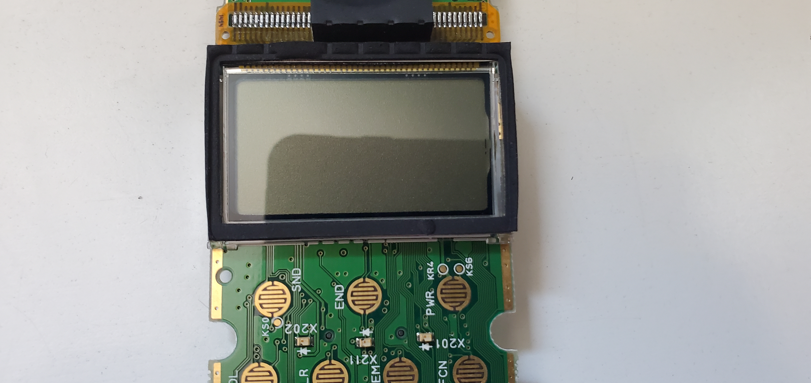
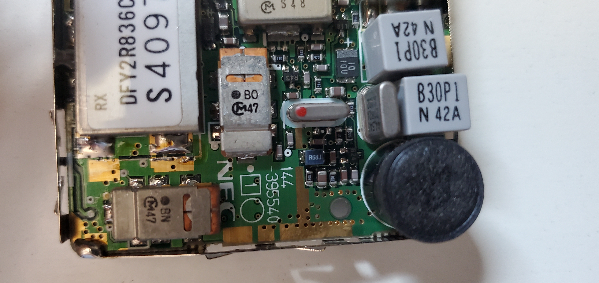
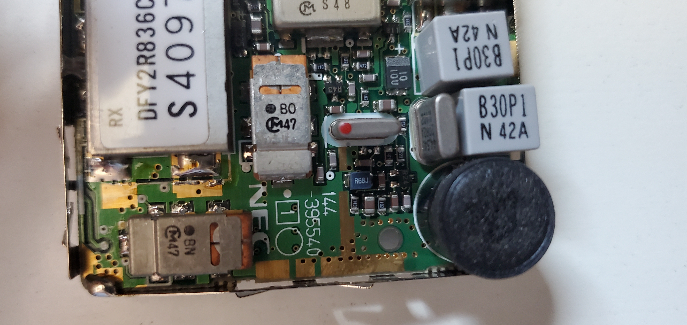
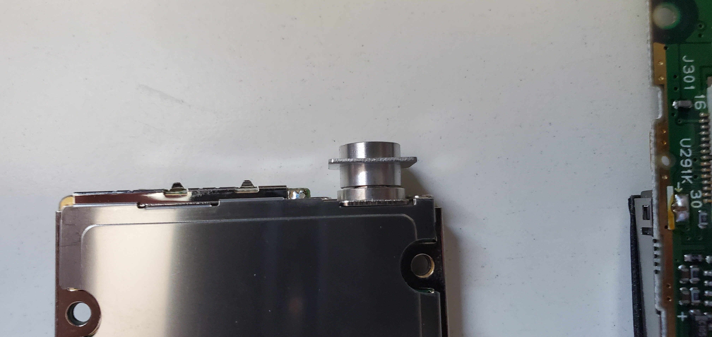
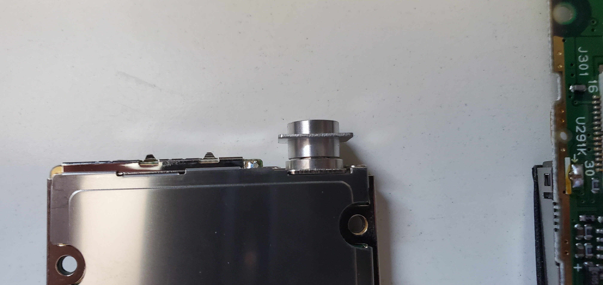

Phones have come a long way from being bricks with minimal functionality to devices in which the “phone” function is not the most used. This NEC P120 is a look at the past and how you could make phone calls away from home.
Disassembly
After removing the battery there are 4 weird screws you need to remove
I don’t know what kind of screws these are, but I was able to remove them with tweezers
After removing the top cover you can see the daughterboard for the cellular transmission
 You can remove two more of those weird screws and one phillips to remove the daughterboard
You can remove two more of those weird screws and one phillips to remove the daughterboard
You can now remove the front cover
 Using the clips on the side you can remove the button pad
Using the clips on the side you can remove the button pad
The parts
Main Board
(For the datasheets I got the closest I could find to the exact chip. Most are not exact)  NEC TC53100CF-E678 This seems to be the ROM
NEC JS500008 and Toshiba T9945

Cellular Daughterboard
Unfortunately I couldn’t find any info on these parts, probably due to their making being solely for NEC’s cell phone industry 


 
  

Case and Screws

Potential Future Uses and Projects
This phone uses the ancient first generation phone technology and fortunately it is pretty hackable (hence the next 4 revisions in cell phone tech). They use analog signals, so tricking them into thinking that you’re an official cell tower is relatively easy provided you have the right equipment. I have found numerous articles on hacking together a 1g service. I don’t currently have an SDR, but I will get an RTL-SDR soon, but I’ll need a device with transmission capability such as LimeSDR which is unfortunately seems unavailable at the time of writing. There is also a scanner mode that I might try messing with. The scanner mode was what made these so insecure back in the day, essentially everyone’s conversation was able to be listened into like a radio. The phone itself works, but the battery has a very short charge after all these years and I don’t have an antenna for it.
References and Links Mobile Collectors - https://www.mobilecollectors.net/phone/5203/nec-p120 FCC ID - https://fccid.io/A98MP5A1B1-1A
Patents: https://patents.google.com/patent/US4954951 https://patents.google.com/patent/US4942516 https://patents.google.com/patent/US4896260 https://patents.google.com/patent/US4829419 https://patents.google.com/patent/US4825364 https://patents.google.com/patent/US4686622 https://patents.google.com/patent/US4531182 https://patents.google.com/patent/US4396976 https://patents.google.com/patent/US4371923 https://patents.google.com/patent/US4121284 https://patents.google.com/patent/US4120583 https://patents.google.com/patent/US4435732 https://patents.google.com/patent/US4471385 https://patents.google.com/patent/US4672457 https://patents.google.com/patent/US4739396